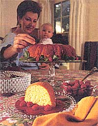
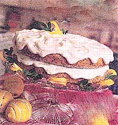
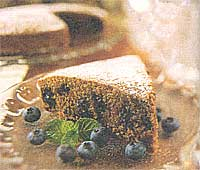

Mother's Kitchen
Lessons in the art of cake making.
When I was growing up, baking cakes was my passion. I found Rice Krispy bars to be predictably boring while cakes were fun and festive. Consequently, I was appointed the house baker every time a birthday rolled around. My favorite was a banana cake so tasty that I was asked to make it for my mother's wedding. During the ceremony, I fixed my eyes on my four-layer cake, dripping with buttery icing. On this not-so-joyous occasion (for me anyway), I could at least anticipate a gigantic slice of my gooey cake. When I married during the carrot cake era, I loaded my rich carrot cake with raisins, honey, and fat. Some of our friends loved it so much that they wanted my cake for their wedding.
While these two cakes may have qualified for the cake hall of fame, I could never compare them to my grandmother's. On Easter we looked forward to her coconut cake decorated with jelly beans. Summer picnics were delicious with her orange sponge iced dream. There were breathtaking birthday cakes followed by her work-of-art Christmas chocolate log.
While my grandmother's wonderful cakes are forever etched in my memory, I regret that's where they must stay. These cakes may remind us of happy days but they're too rich for today's health-conscious cake consumer. The trend these days is to eliminate the fat while compensating with more sugar. This isn't a healthy solution for a variety of reasons. Not only are there the obvious dental problems associated with high sugar intake, but excessive sugar consumption may even suppress one's immune system. According to the American Journal of Clinical Nutrition, just 100 grams of sugar (about one large Coke) in any form decreases the germ-killing ability of white blood cells for up to five hours after eating. Excess sugar also interferes with the body's absorption of antioxidants and minerals. Recent research shows a strong connection between high levels of insulin in the blood and heart disease, obesity, and diabetes. When you eat any form of sugar, your pancreas responds by producing insulin, a hormone designed to take excess sugar out of the bloodstream and move it into fat storage. This is why those folks who are buying supermarket fat-free desserts aren't succeeding in their weight loss programs. I'm not a fanatic, mind you, just conscious of the amounts I use, and diligent about choosing nonrefined sweeteners whenever possible.
My husband was so fond of the poppy seed cake at the Tassajara Bakery in San Francisco that I wanted to develop my own two-layer version. The yogurt cheese for the frosting must be started the day before.
1/2 cup poppy seeds
2 tablespoons lemon juice
3/4 cup skim or lowfat milk 2
eggs 1/3 cup canola oi
1/3 cup honey
1/3 cup sugar
1 1/2 teaspoons vanilla
2 1/4 cup sifted unbleached white flour
2 1/2 teaspoons baking powder
lemon zest for decorating (optional)
Preheat oven to 350° F. Pour the milk into a glass measuring cup, then add the lemon juice. (The milk will curdle.) Line the bottom of two eight-inch cake pans with circles of wax paper. In a mixing bowl, add all the ingredients except the flour and baking powder. Using a mixer, beat until smooth and creamy. Add the flour and baking powder and briefly mix until blended. Pour into the two pans and bake for 20 minutes, until the cakes are lightly browned and an inserted toothpick comes out clean. Cool the cakes on racks before removing from the pans. (Loosen the cakes first with a butter knife.) Peel off the wax paper and frost. If you want, you can sprinkle a little bit of lemon zest around the outside edge of the cake.
Yogurt Cheese Preparation:
4 cups Darman lemon yogurt
Make the yogurt cheese the day before you bake the cake. Pour the yogurt into a (nonterry) dish towel-lined colander. Let drain in the sink overnight or at least 12 hours. When the yogurt is the consistency of cream cheese, refrigerate in a covered plastic container until needed. It will keep three to four days.
2 cups lemon yogurt cheese
1 teaspoon vanilla
2 tablespoons real maple syrup or honey
1-2 tablespoons lemon juice
Using a mixer, whip together the ingredients. Add lemon juice to achieve the desired consistency. Chill until needed. When the cake has completely cooled, frost the top of one layer, letting some frosting drip down the sides. Place the second layer, right side up, on top of the first layer and repeat the procedure. Keep the cake in a cool place until serving.
This is the closest I could get to my grandmother's (Gabby's) sponge cake without using a ton of sugar and egg yolks. Some sponge cakes don't contain baking powder but I like insurance just in case I overfold the egg whites.
1 1/2 cups sifted unbleached white flour
1 1/2 teaspoons baking powder
1/8 teaspoon salt
2 egg yolks (large)
1/2 scup sugar
1 tablespoon honey
1 tablespoon grated orange rind
1/2 cup frozen orange juice concentrate, defrosted
1 teaspoon vanilla
6 egg whites (large)
Set the eggs out on the counter for about a half hour so they'll be at mom temperature. (They'll have a greater volume when beaten.) Preheat oven to 350° F. Spray the bottom of a nonstick 8-10 cup bunch pan with cooking spray. Sift together the flour, baking powder, and salt. Set aside. Using an electric mixer, beat the egg yolks and sugar on high speed for four to five minutes until it's increased in volume and drops in ribbons from the beaters. Beat in the rest of the ingredients up to and including the vanilla. Slowly beat in the flour and baking powder until just mixed. Set aside. Rinse off the beaters and beat the egg whites in a large bowl until foamy peaks are formed (not stiff peaks). Fold* the egg whites into the batter just until blended. There may be a few small egg white lumps. Bake for 35 minutes until golden brown. Cool for at least 20 minutes on a rack. Loosen the inside and outside edges with a butter knife, also wedging it underneath the cake a little to see if it's come loose. Turn the pan over onto a plate and remove the pan. This is a good cake to top with frozen strawberries or raspberry sauce.
*Fold: Tilting the bowl, make clockwise quarter turns as you fold with a rubber spatula, keeping as much air in the egg whites as possible.
Finally, a low-fat carrot cake without cream cheese frosting. The cream needs to chill at least three hours before serving.
2 eggs or 1 egg plus 2 egg whites
3 /4 cup applesauce
1/4 cup canola oil (or any mild oil)
1/3 cup honey
1/4 cup sugar
1 1/2 teaspoons real vanilla
1 tablespoon cinnamon
1/4 teaspoon salt
1/2 teaspoon baking soda
3 cups grated carrots
2 rugs whole-wheat pastry flour or unblearhed white flour; sift before measuring
2 teaspoons baking powder
Preheat oven to 350°F. Lightly grease or spray with cooking spray the bottom of a 9 x 13 baking pan. With an electric mixer, combine all ingredients except the flour and baking powder until smooth. Add the flour and baking powder. Mix on low just until blended. Pour into the pan and smooth with a spatula. Bake for 30 minutes, until an inserted toothpick comes out clean. Cool thoroughly before serving. Top each cake square with a large spoonful of vanilla cream.
1 cap part-skim ricotta cheese
1/4 cup vanilla yogurt
1 1/2 tablespoons sugar
1/2 teaspoon real vanilla
In a blender, mix ingredients until smooth. Chill in a covered container until needed. Stir before using. Keeps two days or so in the refrigerator.
Blueberry Gingerbread This is a quick and easy cake for those unexpected visits by relatives.
1/4 cup oil (I prefer canola.)
1/2 cup sorghum molasses
1 tablespoon brown sugar
1 egg
1 teaspoon cinnamon
1/2 teaspoon ground ginger
1/4 teaspoon allspire
1/8 teaspoon cardamom (optional) 2 cups sifted whole wheat pastry flour
1/2 teaspoon baking soda
1 1/2 teaspoons baking powder
3/4 cup boiling water
1 level cup frozen blueberries (They must be frozen solid.)
confectioners sugar for decorating
Preheat oven to 350°F. Lightly grease the bottom of a nine-inch round cake pan. Line the bottom of the pan with a wax paper circle cut to fit. Using an electric mixes beat well all the ingredients up to and including the cardamom. Add the flour, baking soda, baking powder, and hot water. Beat on low speed for about a minute until fairly smooth; you shouldn't see any dour lumps. Briefly stir in the blueberries and pour into the pan. Rake for 30 minutes, until an in serted toothpick comes out clean.
Cool on a wire rack. Loosen the cake around the edges with a butter knife and turn upside down onto a plate, then invert onto a serving platter. To decorate, lay a doily (I use a heart-shaped paper dolly) in the center of the cake. Using a flour sifter, sprinkle confectioners sugar lightly and evenly over the cake. Hint: Do this just before serving and on a cooled cake.
REFINED WHITE SUGAR: Sugar lacks nutrients and fiber, consequently it's quickly absorbed by the body, which can result in low blood sugar. (That's what gives us a crabby attack.) Turbinado sugar is white sugar before the final refining process to extract molasses.
ARTIFICIAL SWEETENERS:Avoid them.These sugar substitutes have been under attack for 20 years and with good reason. Among other things, they've been associated with cancer and neurological problems. An American Cancer Society study showed that women using artificial sweeteners gained more weight and put it on more quickly than those who didn't use them, defeating the original intent to use them for weight control.
DEHYDRATED CANE JUICE (SUCANAT): Although it's less refined than white sugar, it's. still cane sugar and will metabolize the same way. Use sparingly, as you would sugar.
FRUCTOSE : A highly refined product, fructose is not fruit sugar as some people believe. Liquid fructose is made from processed corn syrup.
HONEY AND MAPLE SYRUP: Like all sweeteners, these naturally occurring sweeteners should be used in moderation. if you're substituting for some of the sugar in a recipe, use less liquid than the recipe calls for since these sweeteners are in liquid form.
BARLEY MALT SYRUP: This mild sweetener is easy on the blood sugar and has the highest protein level of any natural sweetener. It is a good choice, with the only problem being the cost.
BARLEY MALT SYRUP: It is similar to rice syrup in that it is processed from grain and retains about 40 percent of its carbohydrates. The flavor is stronger, almost like molasses.
MOLASSES: Look for molasses that is labeled "unsuffured," because some products can contain sulfur residues. Even though blackstrap molasses contains more nutrients, l prefer a milder-tasting molasses for baking, such as sorghum molasses.
FRUIT JUICE CONCENTRATE, APPLESAUCE, AND FRUIT PUREES: A great way to sweeten baked goods, enabling you to reduce the amount of sugar in a recipe. (Some sugar will probably be necessary so the end result won't be soggy.)
|
 Our kitchen turned out this very respectable poppy seed cake with amazingly little fuss. |
 Anne's favorite: bluberry gingerbread |
 |